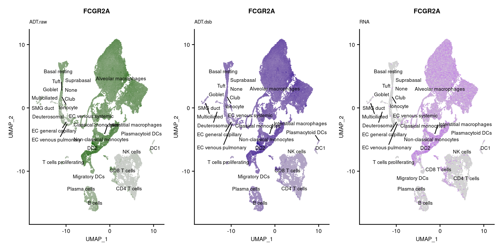
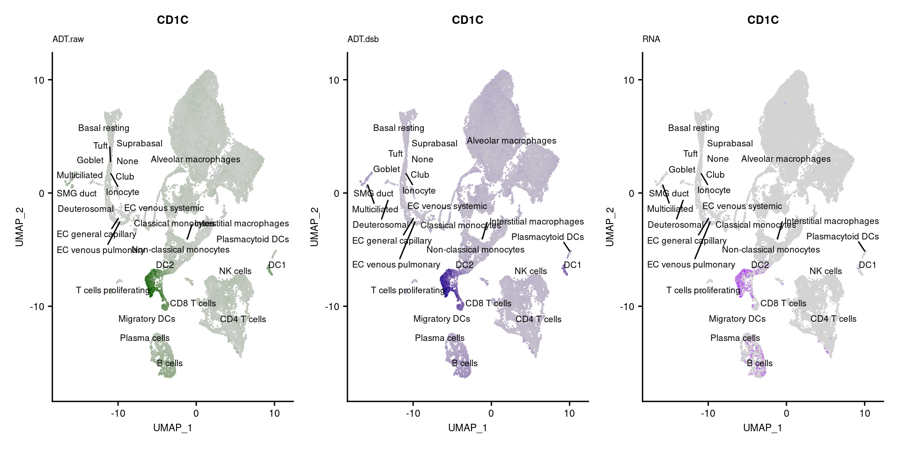

Analysis of scRNA-seq & CITE-seq Data Combined
Normalise and Transfer ADT data
Jovana Maksimovic
June 16, 2022
Last updated: 2022-06-16
Checks: 7 0
Knit directory:
paed-cf-cite-seq/
This reproducible R Markdown analysis was created with workflowr (version 1.7.0). The Checks tab describes the reproducibility checks that were applied when the results were created. The Past versions tab lists the development history.
Great! Since the R Markdown file has been committed to the Git repository, you know the exact version of the code that produced these results.
Great job! The global environment was empty. Objects defined in the global environment can affect the analysis in your R Markdown file in unknown ways. For reproduciblity it’s best to always run the code in an empty environment.
The command set.seed(20210524) was run prior to running the code in the R Markdown file.
Setting a seed ensures that any results that rely on randomness, e.g.
subsampling or permutations, are reproducible.
Great job! Recording the operating system, R version, and package versions is critical for reproducibility.
Nice! There were no cached chunks for this analysis, so you can be confident that you successfully produced the results during this run.
Great job! Using relative paths to the files within your workflowr project makes it easier to run your code on other machines.
Great! You are using Git for version control. Tracking code development and connecting the code version to the results is critical for reproducibility.
The results in this page were generated with repository version 8255c24. See the Past versions tab to see a history of the changes made to the R Markdown and HTML files.
Note that you need to be careful to ensure that all relevant files for the
analysis have been committed to Git prior to generating the results (you can
use wflow_publish or wflow_git_commit). workflowr only
checks the R Markdown file, but you know if there are other scripts or data
files that it depends on. Below is the status of the Git repository when the
results were generated:
Ignored files:
Ignored: .Rhistory
Ignored: .Rproj.user/
Ignored: analysis/obsolete/
Ignored: code/obsolete/
Ignored: data/190930_A00152_0150_BHTYCMDSXX/
Ignored: data/CellRanger/
Ignored: data/GSE127465_RAW/
Ignored: data/SCEs/02_ZILIONIS.sct_normalised.SEU.rds
Ignored: data/SCEs/03_C133_Neeland.demultiplexed.SCE.rds
Ignored: data/SCEs/03_C133_Neeland.emptyDrops.SCE.rds
Ignored: data/SCEs/03_C133_Neeland.nuclear_fraction_calls.rds
Ignored: data/SCEs/03_C133_Neeland.preprocessed.SCE.rds
Ignored: data/SCEs/03_CF_BAL_Pilot.CellRanger_v6.SCE.rds
Ignored: data/SCEs/03_CF_BAL_Pilot.emptyDrops.SCE.rds
Ignored: data/SCEs/03_CF_BAL_Pilot.nuclear_fraction_calls.rds
Ignored: data/SCEs/03_CF_BAL_Pilot.preprocessed.SCE.rds
Ignored: data/SCEs/03_COMBO.clustered.SEU.rds
Ignored: data/SCEs/03_COMBO.clustered_annotated_macrophages_diet.SEU.rds
Ignored: data/SCEs/03_COMBO.clustered_annotated_others_diet.SEU.rds
Ignored: data/SCEs/03_COMBO.clustered_annotated_tcells_diet.SEU.rds
Ignored: data/SCEs/03_COMBO.clustered_azimuth.SEU.rds
Ignored: data/SCEs/03_COMBO.clustered_azimuth_v2.SEU.rds
Ignored: data/SCEs/03_COMBO.clustered_diet.SEU.rds
Ignored: data/SCEs/03_COMBO.integrated.SEU.rds
Ignored: data/SCEs/03_COMBO.zilionis_mapped.SEU.rds
Ignored: data/SCEs/04_C133_Neeland.adt_dsb_normalised.rds
Ignored: data/SCEs/04_C133_Neeland.adt_integrated.rds
Ignored: data/SCEs/04_C133_Neeland.all_integrated.SEU.rds
Ignored: data/SCEs/04_CF_BAL_Pilot.CellRanger_v6.SCE.rds
Ignored: data/SCEs/04_CF_BAL_Pilot.emptyDrops.SCE.rds
Ignored: data/SCEs/04_CF_BAL_Pilot.preprocessed.SCE.rds
Ignored: data/SCEs/04_CF_BAL_Pilot.transfer_adt.SEU.rds
Ignored: data/SCEs/04_COMBO.clean_clustered.SEU.rds
Ignored: data/SCEs/04_COMBO.clean_clustered.SEU_bk.rds
Ignored: data/SCEs/04_COMBO.clean_integrated.SEU.rds
Ignored: data/SCEs/04_COMBO.clean_integrated.SEU_bk.rds
Ignored: data/SCEs/04_COMBO.clean_macrophages_diet.SEU.rds
Ignored: data/SCEs/04_COMBO.clean_others_diet.SEU.rds
Ignored: data/SCEs/04_COMBO.clean_tcells_diet.SEU.rds
Ignored: data/SCEs/04_COMBO.clustered.SEU.rds
Ignored: data/SCEs/04_COMBO.clustered_annotated_adt_diet.SEU.rds
Ignored: data/SCEs/04_COMBO.clustered_annotated_lung_diet.SEU.rds
Ignored: data/SCEs/04_COMBO.clustered_annotated_macrophages_diet.SEU.rds
Ignored: data/SCEs/04_COMBO.clustered_annotated_others_diet.SEU.rds
Ignored: data/SCEs/04_COMBO.clustered_annotated_tcells_diet.SEU.rds
Ignored: data/SCEs/04_COMBO.clustered_diet.SEU.rds
Ignored: data/SCEs/04_COMBO.integrated.SEU.rds
Ignored: data/SCEs/04_COMBO.macrophages_clustered.SEU.rds
Ignored: data/SCEs/04_COMBO.macrophages_integrated.SEU.rds
Ignored: data/SCEs/04_COMBO.others_clustered.SEU.rds
Ignored: data/SCEs/04_COMBO.others_integrated.SEU.rds
Ignored: data/SCEs/04_COMBO.tcells_clustered.SEU.rds
Ignored: data/SCEs/04_COMBO.tcells_integrated.SEU.rds
Ignored: data/SCEs/04_COMBO.zilionis_mapped.SEU.rds
Ignored: data/SCEs/05_CF_BAL_Pilot.transfer_adt.SEU.rds
Ignored: data/SCEs/05_COMBO.clean_clustered.SEU.rds
Ignored: data/SCEs/05_COMBO.clean_integrated.SEU.rds
Ignored: data/SCEs/05_COMBO.clean_macrophages_diet.SEU.rds
Ignored: data/SCEs/05_COMBO.clean_others_diet.SEU.rds
Ignored: data/SCEs/05_COMBO.clean_tcells_diet.SEU.rds
Ignored: data/SCEs/05_COMBO.clustered_annotated_adt_diet.SEU.rds
Ignored: data/SCEs/05_COMBO.clustered_annotated_lung_diet.SEU.rds
Ignored: data/SCEs/05_COMBO.clustered_annotated_macrophages_diet.SEU.rds
Ignored: data/SCEs/05_COMBO.clustered_annotated_others_diet.SEU.rds
Ignored: data/SCEs/05_COMBO.clustered_annotated_tcells_diet.SEU.rds
Ignored: data/SCEs/05_COMBO.macrophages_clustered.SEU.rds
Ignored: data/SCEs/05_COMBO.macrophages_integrated.SEU.rds
Ignored: data/SCEs/05_COMBO.others_clustered.SEU.rds
Ignored: data/SCEs/05_COMBO.others_integrated.SEU.rds
Ignored: data/SCEs/05_COMBO.tcells_clustered.SEU.rds
Ignored: data/SCEs/05_COMBO.tcells_integrated.SEU.rds
Ignored: data/SCEs/06_COMBO.clean_clustered.SEU.rds
Ignored: data/SCEs/06_COMBO.clean_integrated.SEU.rds
Ignored: data/SCEs/06_COMBO.clean_macrophages_diet.SEU.rds
Ignored: data/SCEs/06_COMBO.clean_others_diet.SEU.rds
Ignored: data/SCEs/06_COMBO.clean_tcells_diet.SEU.rds
Ignored: data/SCEs/06_COMBO.macrophages_clustered.SEU.rds
Ignored: data/SCEs/06_COMBO.macrophages_integrated.SEU.rds
Ignored: data/SCEs/06_COMBO.others_clustered.SEU.rds
Ignored: data/SCEs/06_COMBO.others_integrated.SEU.rds
Ignored: data/SCEs/06_COMBO.tcells_clustered.SEU.rds
Ignored: data/SCEs/06_COMBO.tcells_integrated.SEU.rds
Ignored: data/SCEs/C133_Neeland.CellRanger.SCE.rds
Ignored: data/SCEs/obsolete/
Ignored: data/emptyDrops/
Ignored: data/obsolete/
Ignored: data/sample_sheets/obsolete/
Ignored: output/marker-analysis/obsolete/
Ignored: output/obsolete/
Ignored: rename_captures.R
Ignored: renv/library/
Ignored: renv/staging/
Ignored: wflow_background.R
Unstaged changes:
Modified: .gitignore
Modified: .renvignore
Deleted: analysis/03_C133_Neeland.demultiplex.Rmd
Deleted: analysis/03_C133_Neeland.preprocess.Rmd
Deleted: analysis/03_COMBO.clustering_annotation.Rmd
Deleted: analysis/04_CF_BAL_Pilot.emptyDrops.Rmd
Deleted: analysis/04_CF_BAL_Pilot.preprocess.Rmd
Deleted: analysis/04_COMBO.transfer_proteins.Rmd
Deleted: analysis/05_COMBO.cluster_macrophages.Rmd
Deleted: analysis/05_COMBO.cluster_others.Rmd
Deleted: analysis/05_COMBO.cluster_tcells.Rmd
Deleted: analysis/05_COMBO.expression_analysis.Rmd
Deleted: analysis/05_COMBO.postprocess_all.Rmd
Deleted: analysis/05_COMBO.postprocess_macrophages.Rmd
Deleted: analysis/05_COMBO.postprocess_others.Rmd
Deleted: analysis/05_COMBO.postprocess_tcells.Rmd
Modified: renv/.gitignore
Modified: renv/settings.dcf
Note that any generated files, e.g. HTML, png, CSS, etc., are not included in this status report because it is ok for generated content to have uncommitted changes.
These are the previous versions of the repository in which changes were made
to the R Markdown (analysis/07_COMBO.transfer_proteins.Rmd) and HTML (docs/07_COMBO.transfer_proteins.html)
files. If you’ve configured a remote Git repository (see
?wflow_git_remote), click on the hyperlinks in the table below to
view the files as they were in that past version.
| File | Version | Author | Date | Message |
|---|---|---|---|---|
| Rmd | 8255c24 | Jovana Maksimovic | 2022-06-16 | wflow_publish(c(paste0("analysis/", list.files(path = here::here("analysis"), |
1 Load libraries
loaded dsb package version 1.0.1 please cite DOI: 10.1101/2020.02.24.9636032 Load data
2.1 Load C133_Neeland raw and preprocessed CITE-seq data
sceRaw <- readRDS(here("data/SCEs/C133_Neeland.CellRanger.SCE.rds"))
is_hto <- rownames(altExp(sceRaw, "Antibody Capture")) %in%
paste0("Human_HTO_", 1:8)
altExp(sceRaw, "HTO") <- altExp(sceRaw, "Antibody Capture")[is_hto, ]
altExp(sceRaw, "ADT") <- altExp(sceRaw, "Antibody Capture")[!is_hto, ]
altExp(sceRaw, "Antibody Capture") <- NULL
# Load C133_Neeland ADT data
scePrep <- readRDS(here("data", "SCEs",
"03_C133_Neeland.preprocessed.SCE.rds"))2.1.1 Plot raw background and cell ADT expression
md <- data.frame(
rna.size = log10(Matrix::colSums(counts(sceRaw))),
prot.size = log10(Matrix::colSums(counts(altExp(sceRaw, "ADT")))))
md <- md[md$rna.size > 0 & md$prot.size > 0, ]
md$type <- ifelse(rownames(md) %in% colnames(scePrep), "cell", "background")
ggplot(md[md$type == "cell",], aes(x = prot.size,
y = rna.size)) +
geom_hex() +
ggtitle("cells") +
xlim(c(0, 5)) +
ylim(c(0,5)) +
scale_fill_viridis_c(option = "magma") -> p1
ggplot(md[md$type != "cell",], aes(x = prot.size,
y = rna.size)) +
geom_hex() +
xlim(c(0, 5)) +
ylim(c(0,5)) +
ggtitle("background") +
scale_fill_viridis_c(option = "magma") -> p2
(p1 | p2) & theme(legend.position = "bottom",
legend.text = element_text(size = 6))2.2 DSB normalise ADT data
# remove low end ADT expression droplets
md <- md[md$prot.size > 1.5 & md$rna.size > 1.5, ]
background.adt.mtx <- counts(altExp(sceRaw, "ADT"))[, colnames(sceRaw) %in% rownames(md[md$type == "background",])]
keep <- grepl("^A0", rownames(background.adt.mtx))
background.adt.mtx <- background.adt.mtx[keep, ]
cell.adt.mtx <- counts(altExp(scePrep, "ADT"))
cell.adt.mtx <- cell.adt.mtx[keep, ]
read_csv(file = here("data/sample_sheets/TotalSeq-A_Universal_Cocktail_v1.0.csv")) %>%
dplyr::filter(grepl("[Ii]sotype", name)) %>%
pull(id) -> isotype.controls
# normalize and denoise with dsb with
out <- here("data/SCEs/04_C133_Neeland.adt_dsb_normalised.rds")
if(!file.exists(out)){
cells.dsb.norm <- DSBNormalizeProtein(cell_protein_matrix = cell.adt.mtx,
empty_drop_matrix = background.adt.mtx,
denoise.counts = TRUE,
use.isotype.control = TRUE,
isotype.control.name.vec = isotype.controls)
saveRDS(cells.dsb.norm, file = out)
} else {
cells.dsb.norm <- readRDS(out)
}2.3 Load processed RNA data
Load integrated, clustered data that has been mapped to Zilionis reference.
out <- here("data/SCEs/04_COMBO.zilionis_mapped.SEU.rds")
seuInt <- readRDS(out)
## Add Azimuth HCLA v1.0 labels
seuInt <- AddAzimuthResults(seuInt,
filename = here("data/SCEs/03_COMBO.clustered_azimuth.SEU.rds"))
seuInt$predicted.annotation.l1 <- fct_drop(seuInt$predicted.annotation.l1)
## Add Azimuth HCLA v2.0 labels
seuInt <- AddAzimuthResults(seuInt,
filename = here("data/SCEs/03_COMBO.clustered_azimuth_v2.SEU.rds"))
seuInt$predicted.ann_level_1 <- fct_drop(seuInt$predicted.ann_level_1)
seuInt$predicted.ann_level_2 <- fct_drop(seuInt$predicted.ann_level_2)
seuInt$predicted.ann_level_3 <- fct_drop(seuInt$predicted.ann_level_3)
seuInt$predicted.ann_level_4 <- fct_drop(seuInt$predicted.ann_level_4)
seuInt$predicted.ann_finest_level <- fct_drop(seuInt$predicted.ann_finest_level)2.4 Add ADT data to Seurat object
# Extract C133_Neeland RNA data from Seurat object
DefaultAssay(seuInt) <- "RNA"
seuAdt <- DietSeurat(seuInt[, seuInt$experiment == 2], assays = "RNA")
# Create cell ID that matched SCE object
colnames(cells.dsb.norm) <- paste0("B-", colnames(cells.dsb.norm))
colnames(cell.adt.mtx) <- paste0("B-", colnames(cell.adt.mtx))
# Check that all cells in Seurat object are also in SCE object
all(colnames(seuAdt) %in% colnames(cells.dsb.norm))[1] TRUE# Match up and subset Seurat and SCE objects
m <- match(colnames(seuAdt), colnames(cells.dsb.norm))
cells.dsb.norm <- cells.dsb.norm[, m]
cell.adt.mtx <- cell.adt.mtx[, m]
# Check that cell IDs match
all(colnames(seuAdt) == colnames(cells.dsb.norm))[1] TRUE# Add ADT data to Seurat object
# Create a new assay to store ADT information
adt.raw <- CreateAssayObject(counts = cell.adt.mtx)
adt.dsb <- CreateAssayObject(counts = cells.dsb.norm)
# add this assay to the previously created Seurat object
seuAdt[["ADT.raw"]] <- adt.raw
seuAdt[["ADT.dsb"]] <- adt.dsb
# Validate that the object now contains multiple assays
seuAdtAn object of class Seurat
19442 features across 18474 samples within 3 assays
Active assay: RNA (19120 features, 0 variable features)
2 other assays present: ADT.raw, ADT.dsb used (Mb) gc trigger (Mb) max used (Mb)
Ncells 12516199 668.5 38124784 2036.1 47655980 2545.2
Vcells 1699493140 12966.2 2887796642 22032.2 2842229724 21684.52.5 Integrate ADT data
out <- here("data/SCEs/04_C133_Neeland.adt_integrated.rds")
if(!file.exists(out)){
DefaultAssay(seuAdt) <- "ADT.raw"
seuAdt <- intDat(seuAdt, type = "ADT", int.assay.name = "int.adt.raw")
DefaultAssay(seuAdt) <- "ADT.dsb"
seuAdt <- intDat(seuAdt, type = "ADT", adt.norm = "DSB",
int.assay.name = "int.adt.dsb")
saveRDS(seuAdt, file = out)
} else {
seuAdt <- readRDS(out)
}2.6 Cluster ADT
2.6.1 Raw with CLR normalisation
# define proteins to use in clustering (non-isptype controls)
prots <- rownames(cells.dsb.norm)[!rownames(cells.dsb.norm) %in% isotype.controls]
DefaultAssay(seuAdt) <- "int.adt.raw"
VariableFeatures(seuAdt) <- prots
seuAdt <- ScaleData(seuAdt) %>%
RunPCA(verbose = FALSE, dims = 1:30, reduction.name = "int.adt.raw.pca")
seuAdt <- FindNeighbors(object = seuAdt, dims = 1:30, assay = 'int.adt.raw',
k.param = 30, verbose = FALSE,
reduction = "int.adt.raw.pca")
seuAdt <- FindClusters(object = seuAdt, resolution = 1,
algorithm = 3, verbose = FALSE)
seuAdt <- RunUMAP(seuAdt, verbose = FALSE, dims = 1:30,
reduction = "int.adt.raw.pca",
reduction.name = "int.adt.raw.umap")
DimPlot(seuAdt, group.by = "seurat_clusters", label = TRUE,
label.size = 2.5, reduction = "int.adt.raw.umap") + NoLegend() -> p1
DimPlot(seuAdt, group.by = "predicted.ann_level_3", label = TRUE,
label.size = 2.5, reduction = "int.adt.raw.umap") + NoLegend() -> p2
DimPlot(seuAdt, group.by = "donor", reduction = "int.adt.raw.umap") -> p3
# make results dataframe
d <- cbind(seuAdt@meta.data,
as.data.frame(t(seuAdt@assays$ADT.raw@data)))
# calculate the median protein expression separately for each cluster
raw.adt.plot <- d %>%
dplyr::group_by(seurat_clusters) %>%
dplyr::summarize_at(.vars = prots, .funs = median) %>%
tibble::remove_rownames() %>%
tibble::column_to_rownames("seurat_clusters") 2.6.2 DSB normalised
DefaultAssay(seuAdt) <- "int.adt.dsb"
VariableFeatures(seuAdt) <- prots
seuAdt <- ScaleData(seuAdt) %>%
RunPCA(verbose = FALSE, dims = 1:30, reduction.name = "int.adt.dsb.pca")
seuAdt <- FindNeighbors(object = seuAdt, dims = 1:30, assay = 'int.adt.dsb',
k.param = 30, verbose = FALSE,
reduction = "int.adt.dsb.pca")
seuAdt <- FindClusters(object = seuAdt, resolution = 1,
algorithm = 3, verbose = FALSE)
seuAdt <- RunUMAP(seuAdt, verbose = FALSE, dims = 1:30,
reduction = "int.adt.dsb.pca",
reduction.name = "int.adt.dsb.umap")
DimPlot(seuAdt, group.by = "seurat_clusters", label = TRUE,
label.size = 2.5, reduction = "int.adt.dsb.umap") + NoLegend() -> p4
DimPlot(seuAdt, group.by = "predicted.ann_level_3", label = TRUE,
label.size = 2.5, reduction = "int.adt.dsb.umap") + NoLegend() -> p5
DimPlot(seuAdt, group.by = "donor", reduction = "int.adt.dsb.umap") -> p6
d <- cbind(seuAdt@meta.data,
as.data.frame(t(seuAdt@assays$ADT.dsb@data))) %>%
dplyr::group_by(seurat_clusters) %>%
dplyr::summarize_at(.vars = prots, .funs = median) %>%
tibble::remove_rownames() %>%
tibble::column_to_rownames("seurat_clusters") -> dsb.adt.plot((p1 + scale_color_paletteer_d("miscpalettes::pastel") |
p4 + scale_color_paletteer_d("miscpalettes::pastel")) /
((p2 + scale_color_paletteer_d("miscpalettes::pastel") |
p5 + scale_color_paletteer_d("miscpalettes::pastel")) +
plot_layout(guides = "collect")) /
((p3 | p6) +
plot_layout(guides = "collect"))) &
theme(legend.position = "bottom",
legend.text = element_text(size = 8))read_csv(file = here("data/sample_sheets/TotalSeq-A_Universal_Cocktail_v1.0.csv")) -> dat
dat <- dat[dat$id %in% prots,]
all(colnames(raw.adt.plot) == dat$id)[1] TRUEpheatmap::pheatmap(t(raw.adt.plot),
color = viridis::viridis(25, option = "B"),
fontsize_row = 8, border_color = NA,
labels_row = gsub("anti-human", "", dat$name))pheatmap::pheatmap(t(dsb.adt.plot),
color = viridis::viridis(25, option = "B"),
fontsize_row = 8, border_color = NA,
labels_row = gsub("anti-human", "", dat$name))2.6.3 Visualise RNA
DefaultAssay(seuAdt) <- "RNA"
seuAdt <- NormalizeData(seuAdt) %>%
FindVariableFeatures() %>%
ScaleData() %>%
RunPCA(verbose = FALSE, dims = 1:30, reduction.name = "rna.pca") %>%
RunUMAP(verbose = FALSE, dims = 1:30, reduction = "rna.pca",
reduction.name = "rna.umap")DimPlot(seuAdt, group.by = "donor", combine = FALSE, reduction = "rna.umap")[[1]]DimPlot(seuAdt, group.by = "predicted.ann_level_3",
combine = FALSE, reduction = "rna.umap")[[1]]2.7 Integrate RNA data
DefaultAssay(seuAdt) <- "RNA"
out <- here("data/SCEs/04_C133_Neeland.all_integrated.SEU.rds")
if(!file.exists(out)) {
seuAdt <- intDat(seuAdt, type = "RNA")
seuAdt <- RunPCA(seuAdt, verbose = FALSE, dims = 1:30,
reduction.name = "rna.pca") %>%
RunUMAP(verbose = FALSE, dims = 1:30, reduction = "rna.pca",
reduction.name = "rna.umap")
saveRDS(seuAdt, file = out)
} else {
seuAdt <- readRDS(out)
}
DefaultAssay(seuAdt) <- "integrated"
DimPlot(seuAdt, group.by = "donor", combine = FALSE, reduction = "rna.umap")[[1]]2.8 Map CF_BAL_Pilot to C133_Neeland and transfer protein data
out <- here("data/SCEs/05_CF_BAL_Pilot.transfer_adt.SEU.rds")
DefaultAssay(seuInt) <- "RNA"
seuPilot <- DietSeurat(seuInt[, seuInt$experiment == 1], assays = "RNA")
if(!file.exists(out)) {
seuSct <- SCTransform(seuPilot, method = "glmGamPoi")
anchors <- FindTransferAnchors(reference = seuAdt, query = seuSct,
dims = 1:30, reference.reduction = "rna.pca",
normalization.method = "SCT")
adt.raw <- TransferData(anchorset = anchors,
refdata = GetAssayData(seuAdt[["ADT.raw"]]), dims = 1:30)
adt.dsb <- TransferData(anchorset = anchors,
refdata = GetAssayData(seuAdt[["ADT.dsb"]]), dims = 1:30)
seuPilot[["ADT.raw"]] <- adt.raw
seuPilot[["ADT.dsb"]] <- adt.dsb
saveRDS(seuPilot, file = out)
} else {
seuPilot <- readRDS(out)
}2.9 Visualise transferred ADT data
2.9.1 By donor and HLCA v2.0 level 4 annotations
DefaultAssay(seuPilot) <- "ADT.raw"
VariableFeatures(seuPilot) <- prots
seuPilot <- ScaleData(seuPilot) %>%
RunPCA(verbose = FALSE, dims = 1:30, reduction.name = "adt.pca") %>%
RunUMAP(verbose = FALSE, dims = 1:30, reduction = "adt.pca",
reduction.name = "adt.umap")
DimPlot(seuPilot, group.by = "donor", repel = TRUE,
reduction = "adt.umap", label = TRUE, label.size = 2.5) DimPlot(seuPilot, group.by = "predicted.ann_level_4", repel = TRUE,
reduction = "adt.umap", label = TRUE, label.size = 2.5) & NoLegend()### By various marker genes
markers <- read_csv(
here("data/sample_sheets/TotalSeq_A_Human_Universal_Cocktail_Proteins_of_interest_29.09.21.csv"))DefaultAssay(seuPilot) <- "RNA"
Idents(seuPilot) <- "predicted.ann_level_4"
options(ggrepel.max.overlaps = Inf)
p <- vector("list", nrow(markers))
for(i in 1:nrow(markers)){
if(markers$`Gene Name`[i] %in% rownames(seuPilot[["RNA"]]) &
markers$DNA_ID[i] %in% rownames(seuPilot[["ADT.raw"]])){
DefaultAssay(seuPilot) <- "ADT.raw"
p1 <- FeaturePlot(seuPilot, features = markers$DNA_ID[i], label = TRUE,
repel = TRUE, label.size = 2.5,
reduction = 'adt.umap', keep.scale = "all",
cols = c("lightgrey","darkgreen")) +
ggtitle(markers$`Gene Name`[i], subtitle = "ADT.raw") +
theme(title = element_text(size = 8),
axis.text = element_text(size = 8)) +
NoLegend()
DefaultAssay(seuPilot) <- "ADT.dsb"
p2 <- FeaturePlot(seuPilot, features = markers$DNA_ID[i], label = TRUE,
repel = TRUE, label.size = 2.5,
reduction = 'adt.umap', keep.scale = "all",
cols = c("lightgrey","darkblue")) +
ggtitle(markers$`Gene Name`[i], subtitle = "ADT.dsb") +
theme(title = element_text(size = 8),
axis.text = element_text(size = 8)) +
NoLegend()
DefaultAssay(seuPilot) <- "RNA"
p3 <- FeaturePlot(seuPilot, features = markers$`Gene Name`[i], label = TRUE,
repel = TRUE, label.size = 2.5,
reduction = 'adt.umap', keep.scale = "all",
cols = c("lightgrey","purple")) +
ggtitle(markers$`Gene Name`[i], subtitle = "RNA") +
theme(title = element_text(size = 8),
axis.text = element_text(size = 8)) +
NoLegend()
p[[i]] <- (p1 | p2 | p3)
}
}
p[!sapply(p, is.null)][[1]]
[[2]]
[[3]]
[[4]]
[[5]]
[[6]]
[[7]]
[[8]]
[[9]]
[[10]]
[[11]]
[[12]]
[[13]]
[[14]]
[[15]]
[[16]]
[[17]]
[[18]]
[[19]]
[[20]]
[[21]]
[[22]]
[[23]]
[[24]]
[[25]]
[[26]]
[[27]]
[[28]]
[[29]]
[[30]]
[[31]]
[[32]]
[[33]]
[[34]]
[[35]]
[[36]]
[[37]]
[[38]]
[[39]]
[[40]]
[[41]]
[[42]]
[[43]]
[[44]]
[[45]]
[[46]]
[[47]]
[[48]]
[[49]]
[[50]]
[[51]]
[[52]]
[[53]]
[[54]]
[[55]]
[[56]]2.10 Merge C133_Neeland and CF_BAL_Pilot data with ADTs
DefaultAssay(seuPilot) <- "RNA"
DefaultAssay(seuAdt) <- "RNA"
seuMerge <- merge(DietSeurat(seuPilot, assays = c("RNA", "ADT.dsb", "ADT.raw")),
y = DietSeurat(seuAdt, assays = c("RNA","ADT.dsb", "ADT.raw")))
seuMergeAn object of class Seurat
19442 features across 45590 samples within 3 assays
Active assay: RNA (19120 features, 0 variable features)
2 other assays present: ADT.raw, ADT.dsb3 Save data
out <- here(glue("data/SCEs/05_COMBO.clustered_annotated_adt_diet.SEU.rds"))
if(!file.exists(out)) {
saveRDS(seuMerge, file = out)
} 4 Session info
sessioninfo::session_info()─ Session info ───────────────────────────────────────────────────────────────
setting value
version R version 4.1.0 (2021-05-18)
os CentOS Linux 7 (Core)
system x86_64, linux-gnu
ui X11
language (EN)
collate en_AU.UTF-8
ctype en_AU.UTF-8
tz Australia/Melbourne
date 2022-06-16
pandoc 2.17.1.1 @ /usr/lib/rstudio-server/bin/quarto/bin/ (via rmarkdown)
─ Packages ───────────────────────────────────────────────────────────────────
! package * version date (UTC) lib source
P abind 1.4-5 2016-07-21 [?] CRAN (R 4.1.0)
P AnnotationDbi 1.56.2 2021-11-09 [?] Bioconductor
P AnnotationFilter 1.18.0 2021-10-26 [?] Bioconductor
P assertthat 0.2.1 2019-03-21 [?] CRAN (R 4.1.0)
P backports 1.4.1 2021-12-13 [?] CRAN (R 4.1.0)
P beachmat 2.10.0 2021-10-26 [?] Bioconductor
P beeswarm 0.4.0 2021-06-01 [?] CRAN (R 4.1.0)
P Biobase * 2.54.0 2021-10-26 [?] Bioconductor
P BiocFileCache 2.2.0 2021-10-26 [?] Bioconductor
P BiocGenerics * 0.40.0 2021-10-26 [?] Bioconductor
P BiocIO 1.4.0 2021-10-26 [?] Bioconductor
P BiocManager 1.30.16 2021-06-15 [?] CRAN (R 4.1.0)
P BiocNeighbors 1.12.0 2021-10-26 [?] Bioconductor
P BiocParallel * 1.28.3 2021-12-09 [?] Bioconductor
P BiocSingular 1.10.0 2021-10-26 [?] Bioconductor
P BiocStyle * 2.22.0 2021-10-26 [?] Bioconductor
P biomaRt 2.50.1 2021-11-21 [?] Bioconductor
P Biostrings 2.62.0 2021-10-26 [?] Bioconductor
P bit 4.0.4 2020-08-04 [?] CRAN (R 4.1.0)
P bit64 4.0.5 2020-08-30 [?] CRAN (R 4.0.2)
P bitops 1.0-7 2021-04-24 [?] CRAN (R 4.0.2)
P blob 1.2.2 2021-07-23 [?] CRAN (R 4.1.0)
P bluster 1.4.0 2021-10-26 [?] Bioconductor
P bookdown 0.24 2021-09-02 [?] CRAN (R 4.1.0)
P broom 0.7.11 2022-01-03 [?] CRAN (R 4.1.0)
P bslib 0.3.1 2021-10-06 [?] CRAN (R 4.1.0)
P cachem 1.0.6 2021-08-19 [?] CRAN (R 4.1.0)
P callr 3.7.0 2021-04-20 [?] CRAN (R 4.1.0)
P cellranger 1.1.0 2016-07-27 [?] CRAN (R 4.1.0)
P cli 3.1.0 2021-10-27 [?] CRAN (R 4.1.0)
P cluster 2.1.2 2021-04-17 [?] CRAN (R 4.1.0)
P clustree * 0.4.4 2021-11-08 [?] CRAN (R 4.1.0)
P codetools 0.2-18 2020-11-04 [?] CRAN (R 4.1.0)
P colorspace 2.0-2 2021-06-24 [?] CRAN (R 4.0.2)
P cowplot 1.1.1 2020-12-30 [?] CRAN (R 4.0.2)
P crayon 1.4.2 2021-10-29 [?] CRAN (R 4.1.0)
P curl 4.3.2 2021-06-23 [?] CRAN (R 4.1.0)
P data.table 1.14.2 2021-09-27 [?] CRAN (R 4.1.0)
P DBI 1.1.2 2021-12-20 [?] CRAN (R 4.1.0)
P dbplyr 2.1.1 2021-04-06 [?] CRAN (R 4.1.0)
P DelayedArray 0.20.0 2021-10-26 [?] Bioconductor
P DelayedMatrixStats 1.16.0 2021-10-26 [?] Bioconductor
P deldir 1.0-6 2021-10-23 [?] CRAN (R 4.1.0)
P digest 0.6.29 2021-12-01 [?] CRAN (R 4.1.0)
P dplyr * 1.0.7 2021-06-18 [?] CRAN (R 4.1.0)
P dqrng 0.3.0 2021-05-01 [?] CRAN (R 4.1.0)
P DropletUtils * 1.14.1 2021-11-08 [?] Bioconductor
P dsb * 1.0.1 2022-03-14 [?] CRAN (R 4.1.0)
P edgeR 3.36.0 2021-10-26 [?] Bioconductor
P ellipsis 0.3.2 2021-04-29 [?] CRAN (R 4.0.2)
P ensembldb 2.18.2 2021-11-08 [?] Bioconductor
P evaluate 0.14 2019-05-28 [?] CRAN (R 4.0.2)
P fansi 1.0.0 2022-01-10 [?] CRAN (R 4.1.0)
P farver 2.1.0 2021-02-28 [?] CRAN (R 4.0.2)
P fastmap 1.1.0 2021-01-25 [?] CRAN (R 4.1.0)
P filelock 1.0.2 2018-10-05 [?] CRAN (R 4.1.0)
P fitdistrplus 1.1-6 2021-09-28 [?] CRAN (R 4.1.0)
P forcats * 0.5.1 2021-01-27 [?] CRAN (R 4.1.0)
P fs 1.5.2 2021-12-08 [?] CRAN (R 4.1.0)
P future 1.23.0 2021-10-31 [?] CRAN (R 4.1.0)
P future.apply 1.8.1 2021-08-10 [?] CRAN (R 4.1.0)
P generics 0.1.1 2021-10-25 [?] CRAN (R 4.1.0)
GenomeInfoDb * 1.30.1 2022-01-30 [1] Bioconductor
P GenomeInfoDbData 1.2.7 2021-12-21 [?] Bioconductor
P GenomicAlignments 1.30.0 2021-10-26 [?] Bioconductor
P GenomicFeatures 1.46.3 2021-12-30 [?] Bioconductor
P GenomicRanges * 1.46.1 2021-11-18 [?] Bioconductor
P getPass 0.2-2 2017-07-21 [?] CRAN (R 4.0.2)
P ggbeeswarm 0.6.0 2017-08-07 [?] CRAN (R 4.1.0)
P ggforce 0.3.3 2021-03-05 [?] CRAN (R 4.1.0)
P ggplot2 * 3.3.5 2021-06-25 [?] CRAN (R 4.0.2)
P ggraph * 2.0.5 2021-02-23 [?] CRAN (R 4.1.0)
P ggrepel 0.9.1 2021-01-15 [?] CRAN (R 4.1.0)
P ggridges 0.5.3 2021-01-08 [?] CRAN (R 4.1.0)
P git2r 0.29.0 2021-11-22 [?] CRAN (R 4.1.0)
P glmGamPoi * 1.6.0 2021-10-26 [?] Bioconductor
P globals 0.14.0 2020-11-22 [?] CRAN (R 4.0.2)
P glue * 1.6.0 2021-12-17 [?] CRAN (R 4.1.0)
P goftest 1.2-3 2021-10-07 [?] CRAN (R 4.1.0)
P graphlayouts 0.8.0 2022-01-03 [?] CRAN (R 4.1.0)
P gridExtra 2.3 2017-09-09 [?] CRAN (R 4.1.0)
P gtable 0.3.0 2019-03-25 [?] CRAN (R 4.1.0)
P haven 2.4.3 2021-08-04 [?] CRAN (R 4.1.0)
P HDF5Array 1.22.1 2021-11-14 [?] Bioconductor
P here * 1.0.1 2020-12-13 [?] CRAN (R 4.0.2)
hexbin 1.28.2 2021-01-08 [1] CRAN (R 4.1.0)
P highr 0.9 2021-04-16 [?] CRAN (R 4.1.0)
P hms 1.1.1 2021-09-26 [?] CRAN (R 4.1.0)
P htmltools 0.5.2 2021-08-25 [?] CRAN (R 4.1.0)
P htmlwidgets 1.5.4 2021-09-08 [?] CRAN (R 4.1.0)
P httpuv 1.6.5 2022-01-05 [?] CRAN (R 4.1.0)
P httr 1.4.2 2020-07-20 [?] CRAN (R 4.1.0)
P ica 1.0-2 2018-05-24 [?] CRAN (R 4.1.0)
P igraph 1.2.11 2022-01-04 [?] CRAN (R 4.1.0)
P IRanges * 2.28.0 2021-10-26 [?] Bioconductor
P irlba 2.3.5 2021-12-06 [?] CRAN (R 4.1.0)
P jquerylib 0.1.4 2021-04-26 [?] CRAN (R 4.1.0)
P jsonlite 1.7.2 2020-12-09 [?] CRAN (R 4.0.2)
P KEGGREST 1.34.0 2021-10-26 [?] Bioconductor
P KernSmooth 2.23-20 2021-05-03 [?] CRAN (R 4.1.0)
P knitr 1.37 2021-12-16 [?] CRAN (R 4.1.0)
P labeling 0.4.2 2020-10-20 [?] CRAN (R 4.0.2)
P later 1.3.0 2021-08-18 [?] CRAN (R 4.1.0)
P lattice 0.20-45 2021-09-22 [?] CRAN (R 4.1.0)
P lazyeval 0.2.2 2019-03-15 [?] CRAN (R 4.1.0)
P leiden 0.3.9 2021-07-27 [?] CRAN (R 4.1.0)
P lifecycle 1.0.1 2021-09-24 [?] CRAN (R 4.1.0)
P limma 3.50.0 2021-10-26 [?] Bioconductor
P listenv 0.8.0 2019-12-05 [?] CRAN (R 4.1.0)
P lmtest 0.9-39 2021-11-07 [?] CRAN (R 4.1.0)
P locfit 1.5-9.4 2020-03-25 [?] CRAN (R 4.1.0)
P lubridate 1.8.0 2021-10-07 [?] CRAN (R 4.1.0)
P magrittr 2.0.1 2020-11-17 [?] CRAN (R 4.0.2)
P MASS 7.3-53.1 2021-02-12 [?] CRAN (R 4.0.2)
P Matrix 1.4-0 2021-12-08 [?] CRAN (R 4.1.0)
P MatrixGenerics * 1.6.0 2021-10-26 [?] Bioconductor
P matrixStats * 0.61.0 2021-09-17 [?] CRAN (R 4.1.0)
P mclust 5.4.9 2021-12-17 [?] CRAN (R 4.1.0)
P memoise 2.0.1 2021-11-26 [?] CRAN (R 4.1.0)
P metapod 1.2.0 2021-10-26 [?] Bioconductor
P mgcv 1.8-38 2021-10-06 [?] CRAN (R 4.1.0)
P mime 0.12 2021-09-28 [?] CRAN (R 4.1.0)
P miniUI 0.1.1.1 2018-05-18 [?] CRAN (R 4.1.0)
P modelr 0.1.8 2020-05-19 [?] CRAN (R 4.0.2)
P munsell 0.5.0 2018-06-12 [?] CRAN (R 4.1.0)
P nlme 3.1-153 2021-09-07 [?] CRAN (R 4.1.0)
P paletteer * 1.4.0 2021-07-20 [?] CRAN (R 4.1.0)
P parallelly 1.30.0 2021-12-17 [?] CRAN (R 4.1.0)
P patchwork * 1.1.1 2020-12-17 [?] CRAN (R 4.0.2)
P pbapply 1.5-0 2021-09-16 [?] CRAN (R 4.1.0)
P pheatmap 1.0.12 2019-01-04 [?] CRAN (R 4.1.0)
P pillar 1.6.4 2021-10-18 [?] CRAN (R 4.1.0)
P pkgconfig 2.0.3 2019-09-22 [?] CRAN (R 4.1.0)
P plotly 4.10.0 2021-10-09 [?] CRAN (R 4.1.0)
P plyr 1.8.6 2020-03-03 [?] CRAN (R 4.0.2)
P png 0.1-7 2013-12-03 [?] CRAN (R 4.1.0)
P polyclip 1.10-0 2019-03-14 [?] CRAN (R 4.1.0)
P prettyunits 1.1.1 2020-01-24 [?] CRAN (R 4.0.2)
P prismatic 1.1.0 2021-10-17 [?] CRAN (R 4.1.0)
P processx 3.5.2 2021-04-30 [?] CRAN (R 4.1.0)
P progress 1.2.2 2019-05-16 [?] CRAN (R 4.1.0)
P promises 1.2.0.1 2021-02-11 [?] CRAN (R 4.0.2)
P ProtGenerics 1.26.0 2021-10-26 [?] Bioconductor
P ps 1.6.0 2021-02-28 [?] CRAN (R 4.1.0)
P purrr * 0.3.4 2020-04-17 [?] CRAN (R 4.0.2)
P R.methodsS3 1.8.1 2020-08-26 [?] CRAN (R 4.0.2)
P R.oo 1.24.0 2020-08-26 [?] CRAN (R 4.0.2)
P R.utils 2.11.0 2021-09-26 [?] CRAN (R 4.1.0)
P R6 2.5.1 2021-08-19 [?] CRAN (R 4.1.0)
P RANN 2.6.1 2019-01-08 [?] CRAN (R 4.1.0)
P rappdirs 0.3.3 2021-01-31 [?] CRAN (R 4.0.2)
P RColorBrewer 1.1-2 2014-12-07 [?] CRAN (R 4.0.2)
P Rcpp 1.0.7 2021-07-07 [?] CRAN (R 4.1.0)
P RcppAnnoy 0.0.19 2021-07-30 [?] CRAN (R 4.1.0)
RCurl 1.98-1.6 2022-02-08 [1] CRAN (R 4.1.0)
P readr * 2.1.1 2021-11-30 [?] CRAN (R 4.1.0)
P readxl 1.3.1 2019-03-13 [?] CRAN (R 4.1.0)
P rematch2 2.1.2 2020-05-01 [?] CRAN (R 4.1.0)
P renv 0.15.0-14 2022-01-10 [?] Github (rstudio/renv@a3b90eb)
P reprex 2.0.1 2021-08-05 [?] CRAN (R 4.1.0)
P reshape2 1.4.4 2020-04-09 [?] CRAN (R 4.1.0)
P restfulr 0.0.13 2017-08-06 [?] CRAN (R 4.1.0)
P reticulate 1.22 2021-09-17 [?] CRAN (R 4.1.0)
P rhdf5 2.38.0 2021-10-26 [?] Bioconductor
P rhdf5filters 1.6.0 2021-10-26 [?] Bioconductor
P Rhdf5lib 1.16.0 2021-10-26 [?] Bioconductor
P rjson 0.2.21 2022-01-09 [?] CRAN (R 4.1.0)
P rlang 0.4.12 2021-10-18 [?] CRAN (R 4.1.0)
P rmarkdown 2.11 2021-09-14 [?] CRAN (R 4.1.0)
P ROCR 1.0-11 2020-05-02 [?] CRAN (R 4.1.0)
P rpart 4.1-15 2019-04-12 [?] CRAN (R 4.1.0)
P rprojroot 2.0.2 2020-11-15 [?] CRAN (R 4.0.2)
P Rsamtools 2.10.0 2021-10-26 [?] Bioconductor
P RSpectra 0.16-0 2019-12-01 [?] CRAN (R 4.1.0)
P RSQLite 2.2.9 2021-12-06 [?] CRAN (R 4.1.0)
P rstudioapi 0.13 2020-11-12 [?] CRAN (R 4.0.2)
P rsvd 1.0.5 2021-04-16 [?] CRAN (R 4.1.0)
P rtracklayer 1.54.0 2021-10-26 [?] Bioconductor
P Rtsne 0.15 2018-11-10 [?] CRAN (R 4.1.0)
P rvest 1.0.2 2021-10-16 [?] CRAN (R 4.1.0)
P S4Vectors * 0.32.3 2021-11-21 [?] Bioconductor
P sass 0.4.0 2021-05-12 [?] CRAN (R 4.1.0)
P ScaledMatrix 1.2.0 2021-10-26 [?] Bioconductor
P scales 1.1.1 2020-05-11 [?] CRAN (R 4.0.2)
P scater * 1.22.0 2021-10-26 [?] Bioconductor
P scattermore 0.7 2020-11-24 [?] CRAN (R 4.1.0)
P scran * 1.22.1 2021-11-14 [?] Bioconductor
P sctransform 0.3.3 2022-01-13 [?] CRAN (R 4.1.0)
P scuttle * 1.4.0 2021-10-26 [?] Bioconductor
P sessioninfo 1.2.2 2021-12-06 [?] CRAN (R 4.1.0)
P Seurat * 4.0.6 2021-12-16 [?] CRAN (R 4.1.0)
P SeuratObject * 4.0.4 2021-11-23 [?] CRAN (R 4.1.0)
P shiny 1.7.1 2021-10-02 [?] CRAN (R 4.1.0)
P SingleCellExperiment * 1.16.0 2021-10-26 [?] Bioconductor
P sparseMatrixStats 1.6.0 2021-10-26 [?] Bioconductor
P spatstat.core 2.3-2 2021-11-26 [?] CRAN (R 4.1.0)
P spatstat.data 2.1-2 2021-12-17 [?] CRAN (R 4.1.0)
P spatstat.geom 2.3-1 2021-12-10 [?] CRAN (R 4.1.0)
P spatstat.sparse 2.1-0 2021-12-17 [?] CRAN (R 4.1.0)
P spatstat.utils 2.3-0 2021-12-12 [?] CRAN (R 4.1.0)
P statmod 1.4.36 2021-05-10 [?] CRAN (R 4.1.0)
P stringi 1.7.6 2021-11-29 [?] CRAN (R 4.1.0)
P stringr * 1.4.0 2019-02-10 [?] CRAN (R 4.0.2)
P SummarizedExperiment * 1.24.0 2021-10-26 [?] Bioconductor
P survival 3.2-13 2021-08-24 [?] CRAN (R 4.1.0)
P tensor 1.5 2012-05-05 [?] CRAN (R 4.1.0)
P tibble * 3.1.6 2021-11-07 [?] CRAN (R 4.1.0)
P tidygraph 1.2.0 2020-05-12 [?] CRAN (R 4.0.2)
P tidyr * 1.1.4 2021-09-27 [?] CRAN (R 4.1.0)
P tidyselect 1.1.1 2021-04-30 [?] CRAN (R 4.1.0)
P tidyverse * 1.3.1 2021-04-15 [?] CRAN (R 4.1.0)
P tweenr 1.0.2 2021-03-23 [?] CRAN (R 4.1.0)
P tzdb 0.2.0 2021-10-27 [?] CRAN (R 4.1.0)
P utf8 1.2.2 2021-07-24 [?] CRAN (R 4.1.0)
P uwot 0.1.11 2021-12-02 [?] CRAN (R 4.1.0)
P vctrs 0.3.8 2021-04-29 [?] CRAN (R 4.0.2)
P vipor 0.4.5 2017-03-22 [?] CRAN (R 4.1.0)
P viridis 0.6.2 2021-10-13 [?] CRAN (R 4.1.0)
P viridisLite 0.4.0 2021-04-13 [?] CRAN (R 4.0.2)
P vroom 1.5.7 2021-11-30 [?] CRAN (R 4.1.0)
P whisker 0.4 2019-08-28 [?] CRAN (R 4.0.2)
P withr 2.4.3 2021-11-30 [?] CRAN (R 4.1.0)
P workflowr * 1.7.0 2021-12-21 [?] CRAN (R 4.1.0)
P xfun 0.29 2021-12-14 [?] CRAN (R 4.1.0)
P XML 3.99-0.8 2021-09-17 [?] CRAN (R 4.1.0)
P xml2 1.3.3 2021-11-30 [?] CRAN (R 4.1.0)
P xtable 1.8-4 2019-04-21 [?] CRAN (R 4.1.0)
P XVector 0.34.0 2021-10-26 [?] Bioconductor
P yaml 2.2.1 2020-02-01 [?] CRAN (R 4.0.2)
P zlibbioc 1.40.0 2021-10-26 [?] Bioconductor
P zoo 1.8-9 2021-03-09 [?] CRAN (R 4.1.0)
[1] /oshlack_lab/jovana.maksimovic/projects/MCRI/melanie.neeland/paed-cf-cite-seq/renv/library/R-4.1/x86_64-pc-linux-gnu
[2] /config/binaries/R/4.1.0/lib64/R/library
P ── Loaded and on-disk path mismatch.
──────────────────────────────────────────────────────────────────────────────
sessionInfo()R version 4.1.0 (2021-05-18)
Platform: x86_64-pc-linux-gnu (64-bit)
Running under: CentOS Linux 7 (Core)
Matrix products: default
BLAS: /config/binaries/R/4.1.0/lib64/R/lib/libRblas.so
LAPACK: /config/binaries/R/4.1.0/lib64/R/lib/libRlapack.so
locale:
[1] LC_CTYPE=en_AU.UTF-8 LC_NUMERIC=C
[3] LC_TIME=en_AU.UTF-8 LC_COLLATE=en_AU.UTF-8
[5] LC_MONETARY=en_AU.UTF-8 LC_MESSAGES=en_AU.UTF-8
[7] LC_PAPER=en_AU.UTF-8 LC_NAME=C
[9] LC_ADDRESS=C LC_TELEPHONE=C
[11] LC_MEASUREMENT=en_AU.UTF-8 LC_IDENTIFICATION=C
attached base packages:
[1] stats4 stats graphics grDevices datasets utils methods
[8] base
other attached packages:
[1] dsb_1.0.1 paletteer_1.4.0
[3] BiocParallel_1.28.3 glmGamPoi_1.6.0
[5] clustree_0.4.4 ggraph_2.0.5
[7] patchwork_1.1.1 SeuratObject_4.0.4
[9] Seurat_4.0.6 scater_1.22.0
[11] scran_1.22.1 scuttle_1.4.0
[13] DropletUtils_1.14.1 SingleCellExperiment_1.16.0
[15] SummarizedExperiment_1.24.0 Biobase_2.54.0
[17] GenomicRanges_1.46.1 GenomeInfoDb_1.30.1
[19] IRanges_2.28.0 S4Vectors_0.32.3
[21] BiocGenerics_0.40.0 MatrixGenerics_1.6.0
[23] matrixStats_0.61.0 glue_1.6.0
[25] here_1.0.1 forcats_0.5.1
[27] stringr_1.4.0 dplyr_1.0.7
[29] purrr_0.3.4 readr_2.1.1
[31] tidyr_1.1.4 tibble_3.1.6
[33] ggplot2_3.3.5 tidyverse_1.3.1
[35] BiocStyle_2.22.0 workflowr_1.7.0
loaded via a namespace (and not attached):
[1] rappdirs_0.3.3 rtracklayer_1.54.0
[3] scattermore_0.7 R.methodsS3_1.8.1
[5] bit64_4.0.5 knitr_1.37
[7] irlba_2.3.5 DelayedArray_0.20.0
[9] R.utils_2.11.0 data.table_1.14.2
[11] rpart_4.1-15 AnnotationFilter_1.18.0
[13] KEGGREST_1.34.0 RCurl_1.98-1.6
[15] generics_0.1.1 GenomicFeatures_1.46.3
[17] ScaledMatrix_1.2.0 callr_3.7.0
[19] cowplot_1.1.1 RSQLite_2.2.9
[21] RANN_2.6.1 future_1.23.0
[23] bit_4.0.4 tzdb_0.2.0
[25] spatstat.data_2.1-2 xml2_1.3.3
[27] lubridate_1.8.0 httpuv_1.6.5
[29] assertthat_0.2.1 viridis_0.6.2
[31] xfun_0.29 hms_1.1.1
[33] jquerylib_0.1.4 evaluate_0.14
[35] promises_1.2.0.1 progress_1.2.2
[37] restfulr_0.0.13 fansi_1.0.0
[39] dbplyr_2.1.1 readxl_1.3.1
[41] igraph_1.2.11 DBI_1.1.2
[43] htmlwidgets_1.5.4 spatstat.geom_2.3-1
[45] ellipsis_0.3.2 RSpectra_0.16-0
[47] backports_1.4.1 bookdown_0.24
[49] prismatic_1.1.0 biomaRt_2.50.1
[51] deldir_1.0-6 sparseMatrixStats_1.6.0
[53] vctrs_0.3.8 ensembldb_2.18.2
[55] ROCR_1.0-11 abind_1.4-5
[57] cachem_1.0.6 withr_2.4.3
[59] ggforce_0.3.3 vroom_1.5.7
[61] sctransform_0.3.3 GenomicAlignments_1.30.0
[63] prettyunits_1.1.1 mclust_5.4.9
[65] goftest_1.2-3 cluster_2.1.2
[67] lazyeval_0.2.2 crayon_1.4.2
[69] labeling_0.4.2 edgeR_3.36.0
[71] pkgconfig_2.0.3 tweenr_1.0.2
[73] ProtGenerics_1.26.0 nlme_3.1-153
[75] vipor_0.4.5 rlang_0.4.12
[77] globals_0.14.0 lifecycle_1.0.1
[79] miniUI_0.1.1.1 filelock_1.0.2
[81] BiocFileCache_2.2.0 modelr_0.1.8
[83] rsvd_1.0.5 cellranger_1.1.0
[85] rprojroot_2.0.2 polyclip_1.10-0
[87] lmtest_0.9-39 Matrix_1.4-0
[89] Rhdf5lib_1.16.0 zoo_1.8-9
[91] reprex_2.0.1 beeswarm_0.4.0
[93] pheatmap_1.0.12 whisker_0.4
[95] ggridges_0.5.3 processx_3.5.2
[97] rjson_0.2.21 png_0.1-7
[99] viridisLite_0.4.0 bitops_1.0-7
[101] getPass_0.2-2 R.oo_1.24.0
[103] KernSmooth_2.23-20 rhdf5filters_1.6.0
[105] Biostrings_2.62.0 blob_1.2.2
[107] DelayedMatrixStats_1.16.0 parallelly_1.30.0
[109] beachmat_2.10.0 scales_1.1.1
[111] memoise_2.0.1 hexbin_1.28.2
[113] magrittr_2.0.1 plyr_1.8.6
[115] ica_1.0-2 zlibbioc_1.40.0
[117] compiler_4.1.0 BiocIO_1.4.0
[119] dqrng_0.3.0 RColorBrewer_1.1-2
[121] fitdistrplus_1.1-6 Rsamtools_2.10.0
[123] cli_3.1.0 XVector_0.34.0
[125] listenv_0.8.0 pbapply_1.5-0
[127] ps_1.6.0 MASS_7.3-53.1
[129] mgcv_1.8-38 tidyselect_1.1.1
[131] stringi_1.7.6 highr_0.9
[133] yaml_2.2.1 BiocSingular_1.10.0
[135] locfit_1.5-9.4 ggrepel_0.9.1
[137] grid_4.1.0 sass_0.4.0
[139] tools_4.1.0 future.apply_1.8.1
[141] parallel_4.1.0 rstudioapi_0.13
[143] bluster_1.4.0 git2r_0.29.0
[145] metapod_1.2.0 gridExtra_2.3
[147] farver_2.1.0 Rtsne_0.15
[149] digest_0.6.29 BiocManager_1.30.16
[151] shiny_1.7.1 Rcpp_1.0.7
[153] broom_0.7.11 later_1.3.0
[155] RcppAnnoy_0.0.19 AnnotationDbi_1.56.2
[157] httr_1.4.2 colorspace_2.0-2
[159] XML_3.99-0.8 rvest_1.0.2
[161] fs_1.5.2 tensor_1.5
[163] reticulate_1.22 splines_4.1.0
[165] uwot_0.1.11 statmod_1.4.36
[167] rematch2_2.1.2 spatstat.utils_2.3-0
[169] graphlayouts_0.8.0 renv_0.15.0-14
[171] sessioninfo_1.2.2 plotly_4.10.0
[173] xtable_1.8-4 jsonlite_1.7.2
[175] tidygraph_1.2.0 R6_2.5.1
[177] pillar_1.6.4 htmltools_0.5.2
[179] mime_0.12 fastmap_1.1.0
[181] BiocNeighbors_1.12.0 codetools_0.2-18
[183] utf8_1.2.2 lattice_0.20-45
[185] bslib_0.3.1 spatstat.sparse_2.1-0
[187] curl_4.3.2 ggbeeswarm_0.6.0
[189] leiden_0.3.9 survival_3.2-13
[191] limma_3.50.0 rmarkdown_2.11
[193] munsell_0.5.0 rhdf5_2.38.0
[195] GenomeInfoDbData_1.2.7 HDF5Array_1.22.1
[197] haven_2.4.3 reshape2_1.4.4
[199] gtable_0.3.0 spatstat.core_2.3-2